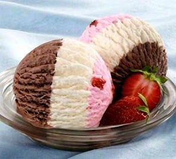

HELADO DE NAPOLITANO

El helado napolitano es un clásico tricolor que junta tres
sabores infalibles en una misma porción: chocolate profundo, vainilla suave y fresa fresca,
servidos uno al lado del otro sin que nadie tenga que elegir
solo uno